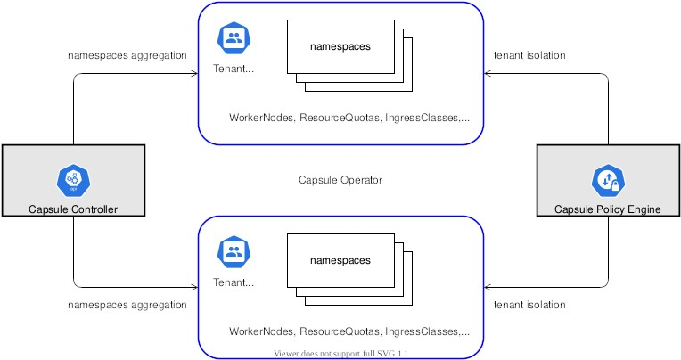
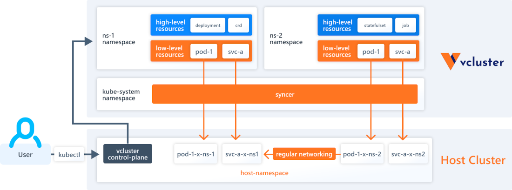
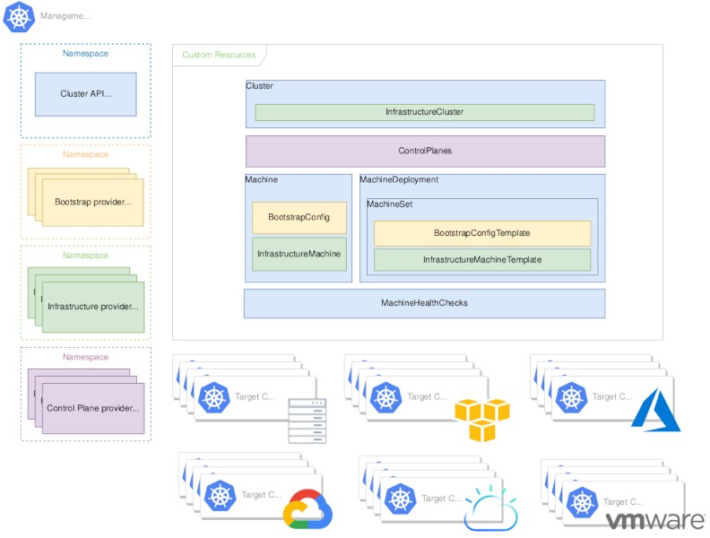

⏳...
Level: 0, gold: 10
Votre propre kube as a service ?
Une aventure dont vous êtes le héros...

Une collection Folio DevOps
Revue des lecteurs/joueurs https://bit.ly/kaas-heros
 @_louidji
@_louidji
| Louis Tournayre @ Zenika Lyon & GDG Cloud & IoT Lyon |
Un nouvelle aventure
Il était une fois le vaste royaume de Kubernetes, dans ce royaume existait un petit namespace qui avait pour capitale le site (et pas le sith).
Ce nouveau territoire inspire et fait des envieux dans le royaume de l'infrastructure...
Contenir l'invasion du Legacy
La guilde des décideurs a décidé que ce royaume sera occupé par... ses armées d'applications Legacy !
Tout en obéissant à la guilde des décideurs il va falloir protéger vos clusters et votre site qui vous ont demandé tant d'effort
C'est décider, vous ne laisserez pas le général Legacy piller les ressources vos clusters
Aller demander conseil à Gandalf
Les conseils de Gandalf
Vous allez trouver votre mentor et ami Gandalf dans son laboratoire.
🧙♂️
Jeune ami, héberger des applications Legacy dans un cluster n'est pas sans risque. Rassures-toi, je vais t'aider, mais avant, j'aimerais que tu prennes conscience des dangers qui t'attendent.
Formation accélérée
En guise d'entrainement Gandalf va vous mettre à l'épreuve.
Tentez de répondre aux questions de Gandalf
Un petit didacticiel pour acquérir les connaissances de l'aventurier débutant
Dans ce quizz éducatif les bonnes réponses sont primées.
Pour le contexte vous utilisez un k8s "standard" (sans configuration et sécurisation spécifiques)
Question 1/5: Qu'est ce qu'un Node ?
Fail 🎃
Aller à l'épreuve 2
Win 💪
Aller à l'épreuve 2
Question 2/5: Qu'est qu'un Namespace ?
Fail 🎃
Aller à l'épreuve 3
Win 💪
Aller à l'épreuve 3
Question 3/5: Quelles ressources ne sont pas partageables entre Pods d'un même Node ?
Fail 🎃
Aller à l'épreuve 4
Win 💪
Aller à l'épreuve 4
Question 4/5: Est-ce qu'un Pod peut ?
- A: Faire des requêtes vers un autre pod dans le même namespace ?
- B: Faire des requêtes vers un autre pod dans un autre namespace ?
- C: Partager l'ip d'un pod dans le namespace ?
- D: Devenir groot sur le Node ?
(2 réponses)
Fail 🎃
Revenir pour votre seconde réponse ou aller à l'épreuve 5
Win 💪
Revenir pour votre seconde réponse ou aller à l'épreuve 5
Question 5/5: Est-ce que je peux restreindre les ressources utilisées par les pods ?
- A: Oui, grâce à l'article 47-1
- B: Non, kube c'est l'anarchie
- C: Oui, les quotas et les limites ça existe aussi dans kube
- D: Vous voulez pas un whisky avant ?
Fail 🎃
Pour conclure jeune padawan...Win 💪
Pour conclure jeune padawan...
Un cluster à manager implique de grandes responsabilités
En plus des problématiques précédentes, il faut aussi prendre en compte:
- La gestion des montées de version des clusters
- Les conflits possibles sur les ressources partagées comme les urls pour les Ingress
- Les ressources des projets qui seraient globales pour le cluster (CRD, ....)?
- ...
De retour à la taverne
Le défi est trop important pour l'affronter seul dans le temps imparti, heureusement, il y a des héros en devenir parmi vous.
Vous pouvez choisir un compagnon pour vous accompagner dans cette aventure.
Choisissez bien parmi les 3 personnages prêts à vous suivre
Chacun d'eux a des caractéristiques et capacités différentes.
Capsule, le hobbit roublard
Vcluster, la magicienne elfe
Capi, le guerrier nain
Qui vous aidera dans cette aventure ?
| 🪢 Il vous attache et vous limite dans un namespace | 🪄 Elle provisionne des "virtual" cluster dans un cluster | 🏗️ Il forge une infra et y provisionne un cluster |
Capsule, le hobbit roublard
| Forces | Faiblesses |
|---|---|
| Très Rapide | Faible isolation |
| Légèreté | Beaucoup de ressources clusters partagés |
| Simplicité | Gestion des droits limités |
Architecture
Capsule offre une notion de Tenant au sein d'un cluster.
Chaque Tenant est associé à un ou plusieurs users et permet de créer un ou plusieurs namespaces.
Les uesrs du tenant n'ont des droits que dans ces namespaces.
Capsule s'appuie sur : RBAC, les Network Policies, les Quotas, ... pour isoler/limiter les tenants.
Chaque Tenant est associé à un ou plusieurs users et permet de créer un ou plusieurs namespaces.
Les uesrs du tenant n'ont des droits que dans ces namespaces.
Capsule s'appuie sur : RBAC, les Network Policies, les Quotas, ... pour isoler/limiter les tenants.

source: https://capsule.clastix.io/docs/
Initialisation
La première étape consiste à installer l'operator avec ses CRDsAprès avoir résolue cette issue, passer à la prochaine
Instanciation du Tenant
- Créer le "Tenant" (Tenant.capsule.clastix.io/v1beta2)
- Créer le user du "Tenant" et créer son kubeconfig
- Créer un namespace avec ce user
Après avoir résolue cette issue, passer à la prochaine
Mise en place de ArgoCD
Compte tenu de l'architecture il n'est pas possible d'avoir un ArgoCD installé pour chaque Tenant.Mais l'on peut avoir un ArgoCD externe (ou pas) qui déploie pour le(s) namespaces(s) en utilisant un compte avec des droits.
Sauf que cela entraine une forte complexitée et une charge de mise en place plus importante (utilisation des Projects,...) . Et vous n'avez pas encore le niveau pour cela, aller directement à la fin de l'histoire
Limitations
Bravo vous avez réussit à mettre en place un système léger de Tenant au sein de kubernetes, mais vous n'avez ni le niveau ni l'envie d'intégrer ArgoCD.Sachez que d'autres voies existent, elles sécurisent plus votre cluster et vous permettent d'intégrer facilement ArgoCD.
Allez fêter votre premier pseudo kube as a service
Vcluster, la magicienne elfe
| Forces | Faiblesses |
|---|---|
| 1 tenant = 1 controle plane | Réseau partagé |
| Rapide à mettre en place | Le cluster hôte a accès aux vclusters |
| Bonne isolation (à la carte) |
Architecture
Vcluster permet d'avoir par namespace dédié du "host" cluster un "virtual" cluster.
Ce virtual cluster à son control plane et ses propres ressources.
Le network est partagé et l'on peut voir les pods du vcluster comme une "projection" des pods sur l'hôte
Ce virtual cluster à son control plane et ses propres ressources.
Le network est partagé et l'on peut voir les pods du vcluster comme une "projection" des pods sur l'hôte

source: https://www.vcluster.com/docs/what-are-virtual-clusters
Instanciation
Au commencement il y a eu la ligne de commande....Elle s'appelait vcluster....
Et elle créa son premier virtual cluster
ℹ️ pour ceux qui préfèrent il est possible d'utiliser Helm en lieu est place de la ligne de commande, c'est même mieux en terme de pratiques
Après avoir résolue cette issue, passer à la prochaine
Mise en place de ArgoCD
Compte tenu de l'architecture on peut avoir un ArgoCD dédié par Tenant.Après avoir résolue cette issue, passer à la prochaine
Tests
En utilisant l'Ingress Controller commun au cluster (mais ce n'est pas une obligation, c'est un raccourci) installer l'application de test Hello Legacy.Si l'on veut utiliser les CRD (IngressRoute, ...) d'un traefik sur le host il y a mécanisme de synchronisation un peu complexe à mettre en place entre le vcluster et l'host. 👉 quand vous aurez finit 👈
Limitations
🪄 Bravo vous avez réussit à mettre en place un système léger, qui réutilise votre infrastructure et vous permet d'offrir des clusters dédiés aux autres projets.Vous avez cependant quelques ressources communes mais rien de bloquant
Allez fêter votre premier kube as a service
Capi, le guerrier nain
| Forces | Faiblesses |
|---|---|
| Isolation compléte ! | Demande plus d'infrastructure |
| Projet prométeur | Lent à mettre en place |
| Un grand nombre de provider | Encore en alpha (mais pas tout) |
Architecture
La Cluster API permet d'installer un cluster avec une infrastructure dédiée chez différents providers.
Cela s'appuie sur un kube d'administration qui sera en capacité de piloter l'infrastructure cible (créer des vm, vpc, ...) et de bootstraper le cluster dans cette infrastructure comme étant une ressource k8s.
Cela s'appuie sur un kube d'administration qui sera en capacité de piloter l'infrastructure cible (créer des vm, vpc, ...) et de bootstraper le cluster dans cette infrastructure comme étant une ressource k8s.

source: https://cluster-api.sigs.k8s.io/user/concepts.html
Initialisation
Dans la mythologie Naine, à la naissance du monde, Dieu créa un cluster de management. Ce cluster père de tous les cluster initialisa ses providers.Puis il enfanta de nouveaux clusters pour peupler les zones, les régions et continents que lui offrait ses providers.
Après avoir résolue cette issue, passer à la prochaine
Instanciation
Et après une longue gestation le cluster de management devient père d'un nouveau cluster....Après avoir résolue cette issue, passer à la prochaine
Mise en place des composants de base
Votre cluster est encore très jeune et peu expérimenter, il va falloir lui apprendre à marcher- Installer Traefik (Ingress Controller)
- Installer ArgoCD
Après avoir résolue cette issue, passer à la prochaine
Tests
Installez et testez l'application Hello Legacy !👉 quand vous aurez finit 👈
Limitations
🛡️💫 Bravo vous avez réussit à mettre en place un système robuste et isolé qui vous permet d'offrir des clusters dédiés aux autres projets.Vous avez consommer cependant un peu plus d'infrastructure que prévu, mais rien de bloquant
Allez fêter votre premier kube as a service
Fin du second tome
Merci à vous pour votre participation 🤗
vous devriez recommencer car rien n'est en production.
Ecran du MJ
| Capsule | VCluster | Cluster API | |
|---|---|---|---|
| Stratégie | Isolation dans un (ou plusieurs) namespace en s'appuyant sur les mécanismes classiques de kubernetes (RBAC, Quota, Limit, NetworkPolicy). Les users sont limités aux ressources "namespaces" |
Création d'un cluster dans un cluster avec ressources "low" et "high" level. Les ressources "low level" sont gérées par le cluster hôte, les ressource "high level" sont gérés par le cluster "virtuel" |
Une nouvelle infrastructure est créée via un provider d'infrastructure (gcp, azure, aws, OpenStack, vSphere, vcluster 😜, ...). Le cluster est provisionné via un bootstrap provider (kubeadm, talos, ...) et un control plane provider (kubeadm, talos, ...) |
| Fonctionnalités 💪🏽 | 🟩🟥🟥🟥 L'utilisateur du Tenant a accès aux ressources de son namespace, il n'a pas accès aux ressources "cluster" et ne peut pas ajouter de CRD ou autres ressources custom (il ne peut pas installer ArgoCD par exemple) |
🟩🟩🟩🟥 L'utilisateur peut quasiment tout faire en dehors de ce qui concerne les composants "d'infrastructure": CNI, hostpath,... |
🟩🟩🟩🟩 With great power comes great responsibility |
| Mutualisation/Optimisation des ressources 💰 | 🟩🟩🟩🟩 Utilise un cluster existant et install un operateur en plus. |
🟩🟩🟩🟥 Utilise un cluster existant et install pour chaque vcluster les composants: k3s, coredns, syncer |
🟥🟥🟥🟥 Chaque nouveau cluster est un nouveau cluster. Il y a en plus un cluster de management (qui peut être mutualisé) |
| Isolation/Securité 🛡️ | 🟩🟥🟥🟥 On partage le cluster mais l'on peut appliquer des contraintes à ce partage |
🟩🟩🟥🟥 On partage le cluster mais l'on peut gérer plus finement que Capsule les ressources que l'on veut partager |
🟩🟩🟩🟩 C'est un cluster dédié 😉 |
| Vitesse de création 🚀 | 🟩🟩🟩🟩 | 🟩🟩🟩🟥 | 🟩🟥🟥🟥 |
| Références 📖 | ||
|---|---|---|
| ArgoCD 🫶 | https://argo-cd.readthedocs.io/en/stable/ | |
| k3d | https://github.com/k3d-io/k3d/ | |
| kind | https://kind.sigs.k8s.io/ | |
| Traefik 💝 | https://traefik.io/ | |
| Capsule | https://capsule.clastix.io/ | |
| Vcluster 💚 | https://www.vcluster.com/ | |
| Cluster API | https://cluster-api.sigs.k8s.io// | |
| Google Cloud Plateform | https://cloud.google.com/ | |
| Midjourney 🤩 | https://www.midjourney.com/app/ | |
| Présentation et démos | https://github.com/louiznk/kaas-heroes.git | |
| Deploy Sith | https://github.com/louiznk/deploy-sith.git | |
Merci de vos Feedback 💝